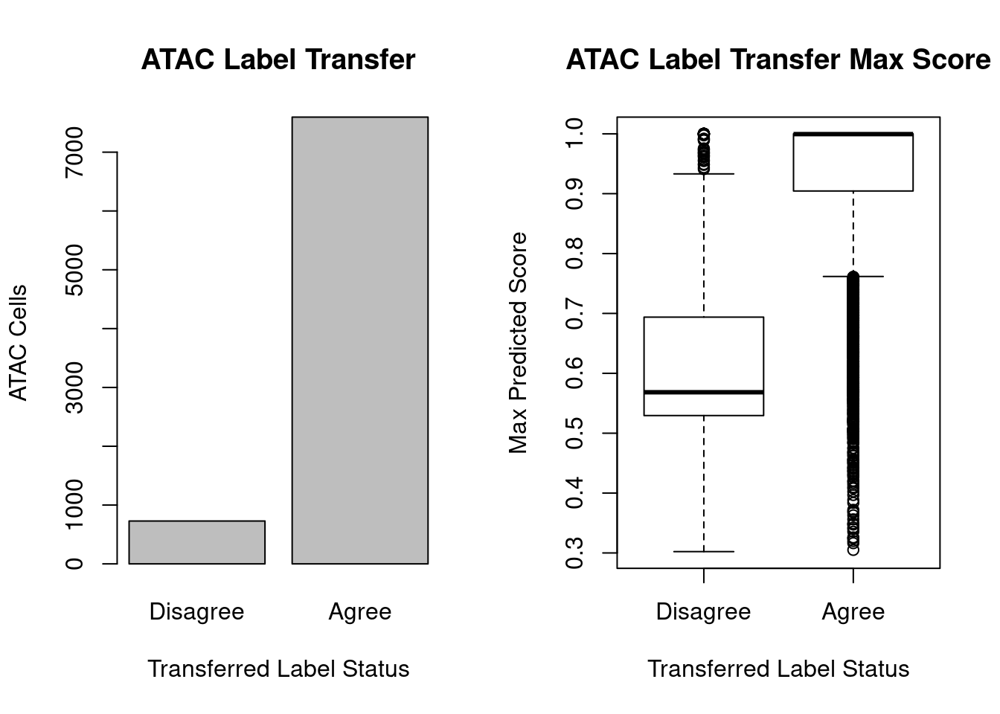
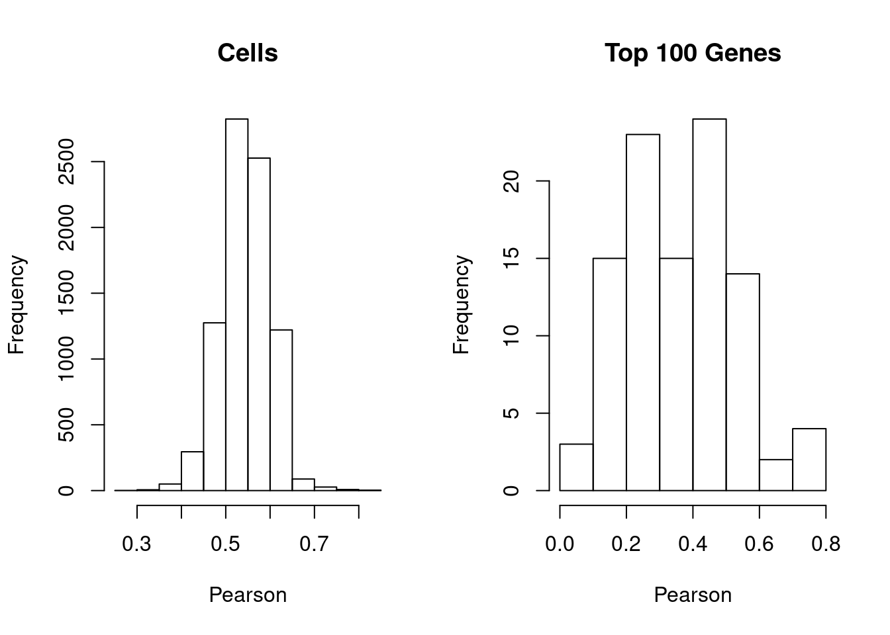
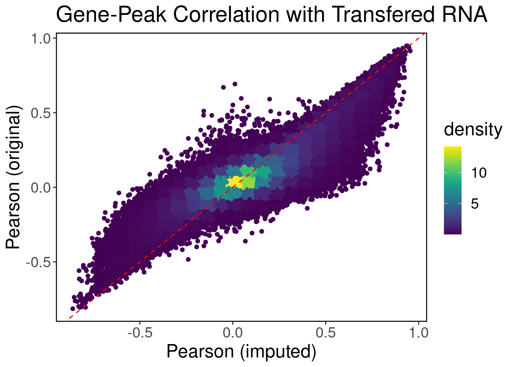
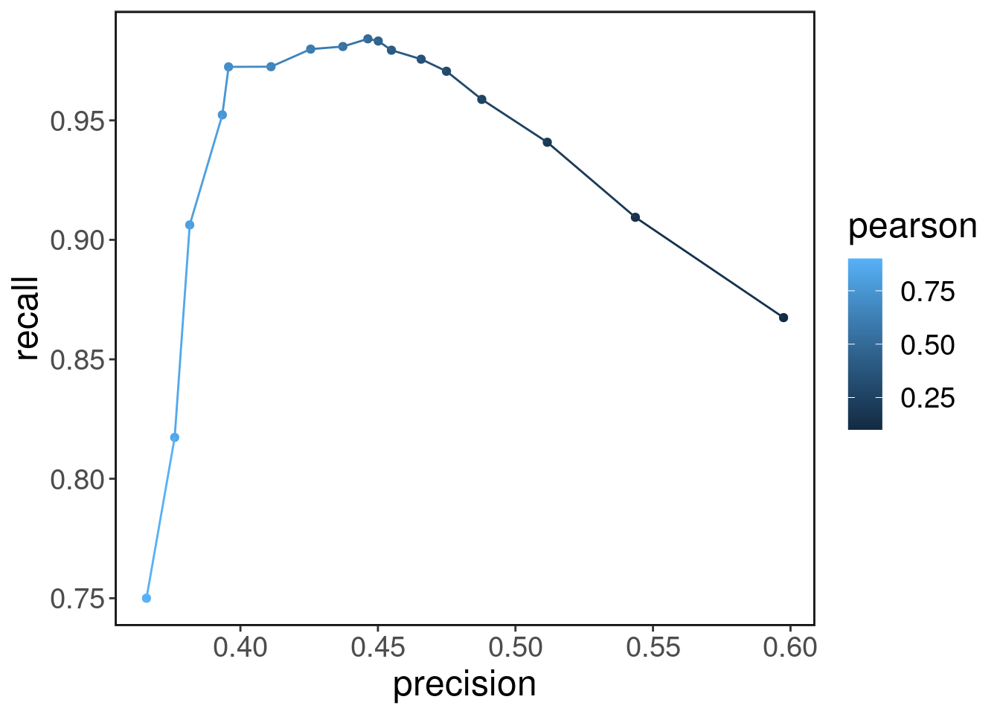

Assessing Seurat Integration
Alan Selewa
Introduction
I obtained paired scRNA-seq and scATAC-seq from 10X Genomics for paired PBMC cells. I performed unsupervised clustering on the scRNA-seq data using marker genes outlined in the Seurat 3k PBMC tutorial. The cell-types are shown below.
s.rna <- readRDS('data/Seurat/rna_seurat.rds')
s.atac <- readRDS('data/Seurat/atac_seurat.rds')
anchors <- readRDS('data/anchors/anchors_kanchor_5.rds')p1 <- DimPlot(s.rna, label=T, group.by='clusters') + NoLegend() + ggtitle('scRNA-seq')
p2 <- DimPlot(s.atac, label=T, group.by='clusters') + NoLegend() + ggtitle('scATAC-seq')
p1 + p2
Evaluating anchors
Using default parameters, I ran FindIntegrationAnchors from Seurat v3 on the scRNA-seq and scATAC-seq data above, and obtained 5658 anchor pairs. Below we evaluate how accurate these anchors are.
cells1 <- anchors@anchors[,"cell1"]
cells2 <- anchors@anchors[,"cell2"]num_cells <- c(length(unique(cells1)), length(unique(cells2)))/length(Cells(s.rna))
names(num_cells) <- c('RNA', 'ATAC')
barplot(num_cells, ylab='Proportion of Cells',xlab='Assay', main='Contribution to Anchors')
freq_cells1 <- table(cells1)
hist_cells1 <- rep(0, max(freq_cells1))
for(i in 1:max(freq_cells1)){
hist_cells1[i] <- sum(freq_cells1==i)
}
barplot(hist_cells1, names.arg = 1:max(freq_cells1), ylab='Number of Cells', xlab='Frequency', main='Frequency of cells used in Anchors (RNA)')
same_cell <- c(sum(cells1 == cells2), sum(cells1 != cells2))
names(same_cell) <- c('same cell', 'different cell')
barplot(same_cell, ylab='Anchors',xlab='Anchor Pairs', main='Anchor Pair Correspondence')cells1_clust <- as.character(s.rna$clusters[cells1])
cells2_clust <- as.character(s.atac$clusters[cells2])
cell_type_agree <- c(sum(cells1_clust != cells2_clust), sum(cells1_clust == cells2_clust))
names(cell_type_agree) <- c('Disagree', 'Agree')
scores_agree <- anchors@anchors[cells1_clust == cells2_clust, "score"]
scores_disagree <- anchors@anchors[cells1_clust != cells2_clust, "score"]
par(mfrow=c(1,2))
barplot(cell_type_agree, ylab='Anchors',xlab='Cell Type Assignment', main='Anchors Cluster Agreement')
boxplot(scores_disagree, scores_agree, names = c('Disagree','Agree'), ylab='Anchor Score', main='Anchor Scores')
Label Transfer
Having obtained anchors, we can perform label transfer from RNA to ATAC. Below I show the the ATAC UMAP with labels transferred from RNA.
s.atac <- suppressMessages(transfer_data(ATAC = s.atac, data = s.rna$clusters, anchors = anchors))
p1 <- DimPlot(s.rna, label=T) + NoLegend() + ggtitle('scRNA-seq')
p2 <- DimPlot(s.atac, label=T, group.by='RNA_IDENT') + NoLegend() + ggtitle('scATAC-seq')
p1 + p2
Because we know the actual cell-type label of ATAC cells (based on their paired RNA data), we can ask if the transferred label agrees with the actual label.
cell_type_agree <- c(sum(s.atac$RNA_IDENT != s.atac$clusters), sum(s.atac$RNA_IDENT == s.atac$clusters))
names(cell_type_agree) <- c('Disagree', 'Agree')
scores_agree <- s.atac$PREDICTED_SCORE_MAX[s.atac$RNA_IDENT != s.atac$clusters]
scores_disagree <- s.atac$PREDICTED_SCORE_MAX[s.atac$RNA_IDENT == s.atac$clusters]
par(mfrow=c(1,2))
barplot(cell_type_agree, ylab='ATAC Cells',xlab='Transferred Label Status', main='ATAC Label Transfer')
boxplot(scores_agree, scores_disagree, names = c('Disagree','Agree'), ylab='Max Predicted Score', xlab='Transferred Label Status', main='ATAC Label Transfer Max Score')Benchmarking label transfer
Here we look at the performance of label transfer under different clustering resolutions. The benchmark procedure is summarized below:
- Generate clusters for each cell based on RNA alone
- Transfer label from RNA to ATAC in an unsupervised fashion
- Compare transfered label with the label generated in 1.
We get this accuracy at various levels of clustering resolution.
Furthermore, we tune 2 parameters:
- k.anchor: the size of the neighborhood for finding mutual nearest neighbors.
- k.filter: filters anchors that are NOT within
k.filternearest neighbors of eachother in high dimensional space (gene space).
The transfer label performs worse as the number of clusters is increased. Here the range of resolution implies 5 to 18 clusters.
lab.acc.list <- readRDS('data/transfer_label_benchmarks/label_transfer_accuracy.rds')
res <- readRDS('data/transfer_label_benchmarks/resolutions.rds')
lab.acc.smooth <- lapply(lab.acc.list, FUN = function(x){zoo::rollmean(x = x, k=3)})
res <- res[1:length(lab.acc.smooth$`1`)]
benchmark.df <- data.frame(lab.acc.smooth)
colnames(benchmark.df) <- as.character(c(1,10,15,20,5))
benchmark.df <- suppressMessages(reshape2::melt(benchmark.df))
colnames(benchmark.df) <- c("k.anchor","TransferLabelAcurracy")
benchmark.df$res <- rep(res, length(lab.acc.smooth))p1 <- ggplot(benchmark.df, aes(x=res, y=TransferLabelAcurracy, color=k.anchor)) + geom_point() + geom_line() + ggClean() + xlab('Resolution') + ylab('Transfer Label Accuracy') + ggtitle('kanchor benchmark')lab.acc.list <- readRDS('data/transfer_label_benchmarks/label_transfer_accuracy_kfilter.rds')
res <- readRDS('data/transfer_label_benchmarks/resolutions.rds')
lab.acc.smooth <- lapply(lab.acc.list, FUN = function(x){zoo::rollmean(x = x, k=3)})
res <- res[1:length(lab.acc.smooth$`10`)]
benchmark.df <- data.frame(lab.acc.smooth)
colnames(benchmark.df) <- as.character(c(10,100,200,500,Inf))
benchmark.df <- suppressMessages(reshape2::melt(benchmark.df))
colnames(benchmark.df) <- c("k.filter","TransferLabelAcurracy")
benchmark.df$res <- rep(res, length(lab.acc.smooth))p2 <- ggplot(benchmark.df, aes(x=res, y=TransferLabelAcurracy, color=k.filter)) + geom_point() + geom_line() + ggClean() + xlab('Resolution') + ylab('Transfer Label Accuracy') + ggtitle('kfilter benchmark')p1 + p2
Based on the above results, it seems that the metric is fairly robust to the k.anchor parameter. Furthermore, it seems that filtering anchors according to high dimension generally not a good idea because turning off the k.filter by setting it to Inf results in using all anchors and achieves higher accuracy.
RNA Transfer
We can also transfer gene expression from RNA to ATAC. But how good is the transfer of RNA data? Here we explore this by looking at peak-gene correlations in close detail. In particular, we grab all genes within 100kb of each peak (~200k pairs) and then find their correlations using pseudo-cells. A pseudo-cell here contains aggregated read counts for RNA and ATAC-seq across 28 cells.
Simple correlations before vs after transfer
Lets transfer some data and see how the cells and genes correlate with the original RNA data.
og.data <- as.matrix(s.rna@assays$RNA@data)
imputed.rna <- suppressMessages(TransferData(anchorset = anchors, refdata = og.data, weight.reduction = 'cca'))imputed.rna.mat <- as.matrix(imputed.rna@data)
topN <- order(rowSums(og.data), decreasing = T)[1:100]
topN.imputed <- imputed.rna.mat[topN,]
topN.og <- og.data[topN,]
gene.cor <- rep(0, length(topN))
for(i in 1:length(topN)){
x <- topN.imputed[i,]
y <- topN.og[i,]
gene.cor[i] <- cor(x, y, method = 'pearson')
}n <- dim(imputed.rna.mat)[2]
cell.cor <- rep(0, n)
for(i in 1:n){
bol <- imputed.rna.mat[,i] > 0
x <- imputed.rna.mat[,i][bol]
y <- og.data[,i][bol]
cell.cor[i] <- cor(x, y, method = 'pearson')
}par(mfrow=c(1,2))
hist(cell.cor, xlab='Pearson', main='Cells')
hist(gene.cor, xlab='Pearson', main='Top 100 Genes')
Peak-gene correlations in pseudo-cells
Here, we find all genes within 100kb of all peaks in the scATAC-seq data (~62k peaks). We will use aggregated RNA and ATAC-seq (pseudo-cells) to find robust correlations.
satac_agg <- readRDS('data/Seurat/agg_atac_seurat.rds')
srna_agg <- readRDS('data/Seurat/agg_rna_seurat.rds')Here each each dot represents ~28 cells. The pseudo-cells are labeled by the labels of their RNA counterpart. As we can see, the pseudo-cells cluster together.
DimPlot(satac_agg, group.by='clusters', label=T) + LegendOff() + ggtitle('Pseuo-cell ATAC-seq')
Lets find every gene within 100kb of each peak.
annotations <- suppressWarnings(suppressMessages(GetGRangesFromEnsDb(ensdb = EnsDb.Hsapiens.v86::EnsDb.Hsapiens.v86, verbose = F)))
ensembldb::seqlevelsStyle(annotations) <- "UCSC"
exon_annotations <- annotations[annotations$type=="exon",]
DA_peaks_GR <- granges(satac_agg)
DA_peaks_genes <- suppressWarnings(plyranges::join_overlap_left(x = DA_peaks_GR, y = exon_annotations, maxgap=100000, minoverlap=0))
peakies <- Signac::GRangesToString(DA_peaks_genes)
genes <- DA_peaks_genes$gene_name
comb <- paste0(peakies, '-', genes)
peakies <- peakies[!duplicated(comb)]
genes <- genes[!duplicated(comb)]
enhancers_genes_df <- cbind(peakies, genes)
enhancers_genes_df <- enhancers_genes_df[!is.na(enhancers_genes_df[,"genes"]),]Pull aggregated pseudo-cell data.
agg.atac.mat <- as.matrix(satac_agg@assays$peaks@data)
agg.rna.mat <- as.matrix(srna_agg@assays$RNA@data)
enhancers_genes_df <- enhancers_genes_df[enhancers_genes_df[,"genes"] %in% rownames(agg.rna.mat),]
DA.atac.mat <- agg.atac.mat[enhancers_genes_df[,"peakies"],]
genes.DA.rna.mat <- agg.rna.mat[enhancers_genes_df[,"genes"],]Get correlations between peaks and true RNA-seq data across all cells
row_by_row_cor <- function(A, B){
p1 <- dim(A)[1]
p2 <- dim(B)[1]
stopifnot(p1 == p2)
rr_cors <- rep(0, p1)
for(i in 1:p1){
x <- A[i,]
y <- B[i,]
if(stats::sd(x) > 0 & stats::sd(y) > 0){
rr_cors[i] <- cor(x, y)
}
else{
rr_cors[i] <- NA
}
}
return(rr_cors)
}gene_enhancer_cor <- row_by_row_cor(A = DA.atac.mat, B = genes.DA.rna.mat)Transfer RNA counts to ATAC-seq cells
og.data <- as.matrix(s.rna@assays$RNA@counts)
imputed.rna <- suppressMessages(TransferData(anchorset = anchors, refdata = og.data, weight.reduction = 'cca'))Aggregate the transferred RNA data, so we can compare to the original aggregated data.
aggregate.counts <- list()
imputed.counts <- as.matrix(imputed.rna@data)
for(i in unique(s.rna$seurat_clusters)){
sub.counts <- imputed.counts[,s.rna$seurat_clusters == i]
aggregate.counts[[i]] <- rowSums(sub.counts)
}
aggregate.counts <- as.data.frame(aggregate.counts)
colnames(aggregate.counts) <- 1:ncol(aggregate.counts)
imputed_srna_agg <- CreateSeuratObject(counts = aggregate.counts)
imputed_srna_agg <- NormalizeData(imputed_srna_agg)
imputed_srna_agg_mat <- as.matrix(imputed_srna_agg@assays$RNA@data)Get correlations between peaks and imputed/transferred RNA-seq data across all cells
genes.DA.rna.imputed.mat <- imputed_srna_agg_mat[enhancers_genes_df[,"genes"],]
gene_enhancer_cor_imputed <- row_by_row_cor(A = DA.atac.mat, B = genes.DA.rna.imputed.mat)Correlations before vs after imputation
plot.df <- data.frame(imputed_cor = gene_enhancer_cor_imputed, true_cor=gene_enhancer_cor)
plot.df <- plot.df %>% drop_na()
get_density <- function(x, y, ...) {
dens <- MASS::kde2d(x, y, ...)
ix <- findInterval(x, dens$x)
iy <- findInterval(y, dens$y)
ii <- cbind(ix, iy)
return(dens$z[ii])
}
plot.df$density <- get_density(plot.df$imputed_cor, plot.df$true_cor)
ggplot(plot.df, aes(x=imputed_cor, y=true_cor, color=density)) + geom_point() + ggtitle('Gene-Peak Correlation with Transfered RNA') + xlab('Pearson (imputed)') + ylab('Pearson (original)') + geom_abline(slope = 1, color="red", linetype="dashed") + ggClean() + scale_color_viridis()
Precision-recall of gene-peaks detected
Here we plot the recall vs precision at various cutoffs of the Pearson correlation coefficient. The recall/precision are computed w.r.t the gene-peak correlations in the original multiome data (with pseudo-cells)
cors <- seq(0.1, 0.9, by=0.05)
recall <- rep(0, length(cors))
precision <- rep(0, length(cors))
peak_gene_str <- paste0(enhancers_genes_df[,"peakies"],'-',enhancers_genes_df[,"genes"])
for(i in 1:length(cors)){
ground_truth_pairs <- peak_gene_str[which(abs(gene_enhancer_cor) > cors[i])]
inferred_pairs <- peak_gene_str[which(abs(gene_enhancer_cor_imputed) > cors[i])]
recall[i] <- length(intersect(inferred_pairs,ground_truth_pairs))/length(ground_truth_pairs)
precision[i] <- length(intersect(inferred_pairs,ground_truth_pairs))/length(inferred_pairs)
}re.pre.df <- data.frame(recall=recall, precision=precision, pearson=cors)
ggplot(re.pre.df, aes(x=precision, y = recall, color=pearson)) + geom_point() + geom_line() + ggClean()